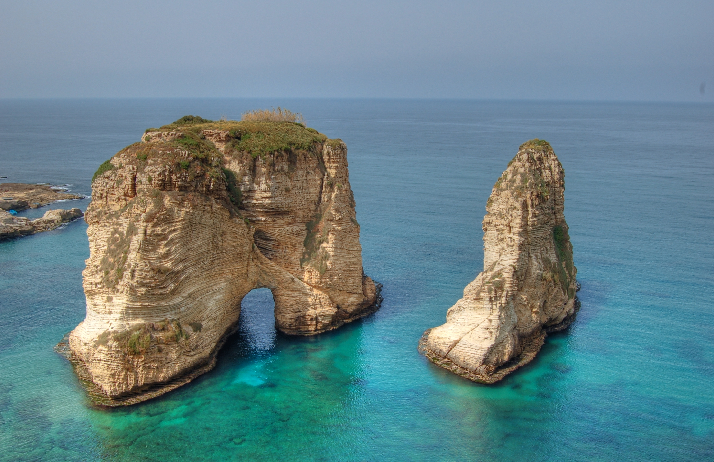
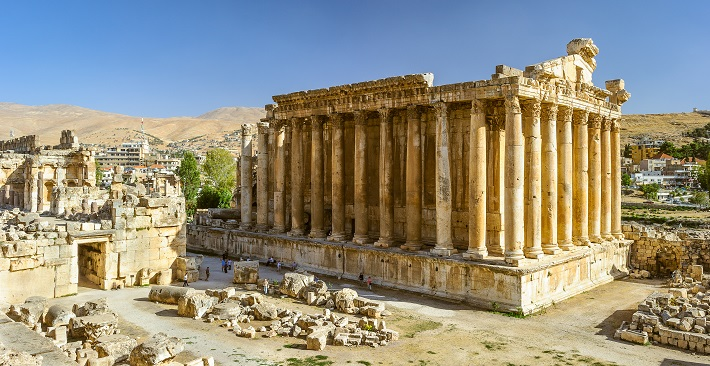
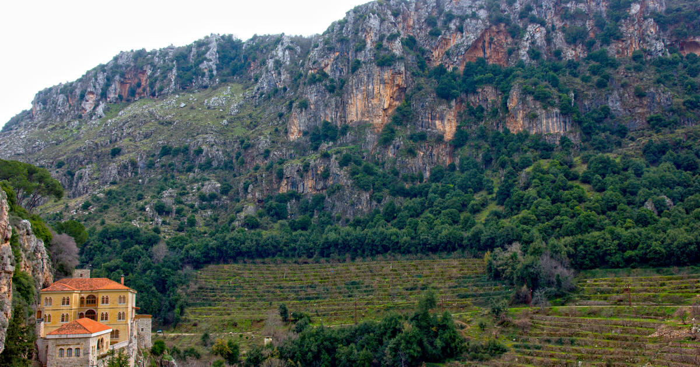
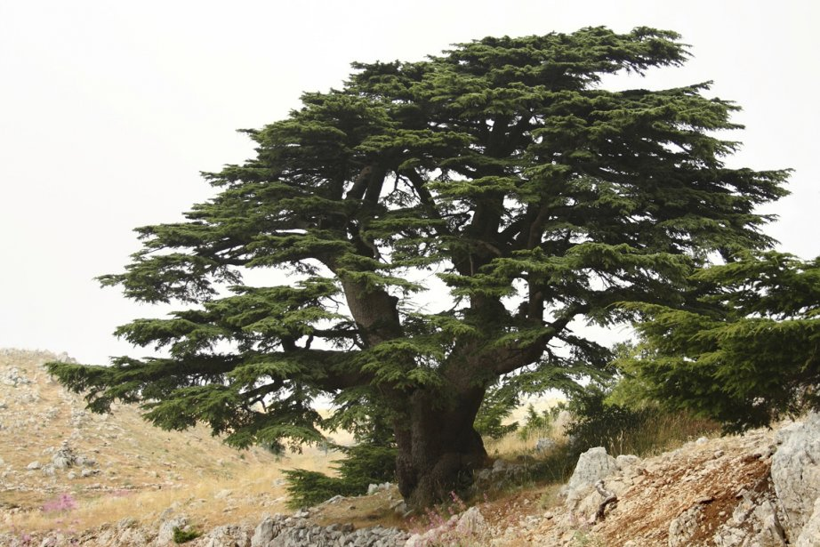

La république libanaise correspondant à la prononciation [loubnân] en arabe est un petit pays de 10 452 km², soit l'équivalent d'une surface trois fois moindre que celle de la Belgique et de deux fois moindre que celle d'Israël (20 770 km²); sa longueur est d'environ 250 km sur 40 km à 70 km de largeur. Le pays est limité au nord et à l'est par la Syrie, au sud par Israël (Palestine) et à l'ouest par la Méditerranée. Le relief du Liban est formé à l'ouest par une chaîne de montagnes les monts Liban, qui domine une étroite plaine côtière et à l'est par une seconde chaîne de montagnes parallèle à la première, l'Anti-Liban adossé à la Syrie et le mont Hermon au sud entre les deux, s'étend le haut plateau de la Békaa. Le nom du Liban (en arabe Loubnân) vient d'un mot araméen signifiant «la montagne Blanche», c'est à dire celui de sa chaîne de montagnes toujours enneigées: les monts Liban, désignés aussi par l'expression la Montagne. La capitale, Beyrouth, compte plus d'un million d'habitants. Les villes importantes sont les suivantes: Tripoli (200 000 hab.), Saïda (100 000 hab.), Tyr (70 000 hab.), Nabatieh (15 000 hab.), Baalbek (env. 20 000 hab.), Zahlé (30 000 hab.), Jounieh (100 000 hab.). L'emblème du Liban est le «cèdre du Liban» ("Cedrus libani") originaire de la région couvrant le Liban, la Syrie et une partie de la Turquie. La présence de cet arbre est devenue exceptionnelle, sauf dans quelques forêts.
La grotte aux Pigeons est le nom d'un site naturel constitué par deux îlots de calcaire que baigne la mer Méditerranée, les rochers de Raouché, au large de la Corniche de Beyrouth, la capitale du Liban.
Baalbek est l'ancienne Héliopolis des Romains. Aujourd'hui, la ville moderne, chef-lieu du district de Baalbek, au Liban, compte environ 80 000 habitants.
La vallée de Qadisha est située au Liban dans le Gouvernorat du Nord. Avec la forêt des Cèdres de Dieu, elle est inscrite depuis 1998 sur la Liste du patrimoine mondial de l'UNESCO
Le Cèdre du Liban, parfois appelé Cèdre du mont Liban, est une espèce d'arbres conifères de la famille des Pinaceae. La principale caractéristique du cèdre du Liban provient de son port conique durant ses trente premières années, devenant tabulaire par la suite.
